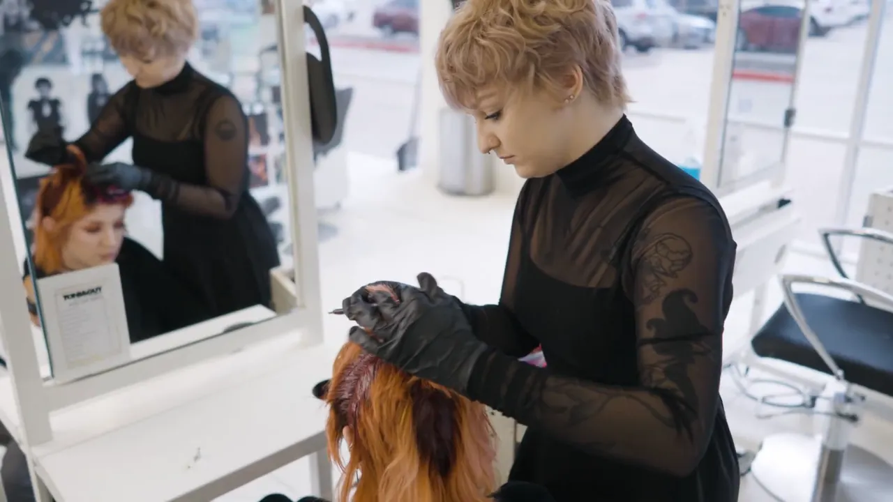

Commercial video production in Dallas
Made
to sell.
Taylormade Creative makes commercials, product videos and ad campaigns for brands in Dallas–Fort Worth and beyond. I plan the concept with you, then direct, light, shoot, edit and grade the spot, on camera or with voiceover. Every project is quoted on scope within one business day.

Spot by spot.
Taylormade Creative has made commercials and campaigns for TONI&GUY Academy, It’s a Secret Med Spa, Marviano Cosmetics, Juices & Botanics and La Supreme Hair, plus an Oribe product commercial.

Commercial · 1:00
TONI&GUY Academy × Plano ISD
A one-minute spot inviting Plano ISD students to apply to the academy's program.
Play with soundOn camera or voiceover.
A spot can put people on camera, let a voiceover carry the words, or do both, and we choose when we plan it.
On camera. People in front of the lens, speaking or not. The TONI&GUY Academy recruiting film puts its admissions and education directors on camera. When your own team speaks to camera, I help with the script and bring a teleprompter to set.
Voiceover. The words run over the picture, so every frame can stay on the product, the place or the offer. The 19-second sale spot for It’s a Secret Med Spa works this way.
Product videos.
A product video shows the product itself in motion, for your store page, your ads and your launch.
Shine, texture and true color only survive a phone screen when the light is planned with the shot, so I light the product myself and grade the footage by hand. The Oribe product commercial is the reference: a model, cut with slow-motion product shots. Need stills too? Product photography from the same studio can be quoted alongside the video. Selling online? See Shopify websites.
Cut for each placement.
One shoot can be cut into the wide and vertical versions your campaign runs, and the versions you need are set in your quote.
A spot for YouTube or your website runs wide, at 16:9. The same footage can be reframed to 1:1, 4:5 and 9:16 for the feed, Reels, Stories and TikTok, with the subject kept in frame. Tell me where the campaign will run and every version goes into one quote. See it happen live on the social ad videos page.
How a spot comes together.
You get a quote within one business day, a 50% deposit locks the shoot date, and the finished spot arrives about two weeks after the shoot.
- Concept. We set the idea, the script and the shot list together.
- Locations. Your store, office or set anywhere in DFW, the downtown Dallas studio, or a destination. Travel outside DFW is added to the quote.
- Shoot. Directed and lit in-house.
- Edit and grade. Edited, then color graded by hand, with two rounds of edits included.
- Delivery. About two weeks after the shoot.
Launching all year? Keep the studio on retainer. Tell me what you need each month and I'll quote it. Build your month
Questions, answered
Updated October 2026. Also see all video production, video on retainer and all FAQs.
How much does a commercial cost in Dallas?
Taylormade Creative quotes every commercial on scope, so there is no flat price. The quote is built from the concept, the locations, the crew the shoot needs and how complex the edit is, plus the versions you plan to run. Send your brief with a budget range and Nelson Taylor replies within one business day. A 50% deposit locks the shoot date.
Do you come up with the concept and script?
Yes, Taylormade Creative plans the concept with you before the shoot, and Nelson Taylor helps write or tighten the script and builds the shot list. When someone speaks to camera, a teleprompter comes to set. Bring what you have, whether that's a finished script, a rough idea or just the product and the goal.
Do you make product videos?
Yes, Taylormade Creative shoots product videos and product commercials across Dallas–Fort Worth, with Nelson Taylor lighting the product in-house and color grading the footage by hand. The Oribe product commercial on this page pairs a model with slow-motion product shots. Product photography from the same studio can be quoted alongside the video.
Do you travel for commercial shoots?
Yes, Taylormade Creative is based in downtown Dallas and shoots anywhere in Dallas–Fort Worth, including Plano, Frisco, Irving, Allen, McKinney, Southlake and Westlake. Outside DFW, travel is added to the quote. The Juices & Botanics campaign on this page was a destination shoot at a tropical lagoon and waterfall.
How long does a commercial take?
Standard delivery from Taylormade Creative is about two weeks after the shoot, with two rounds of edits included. The planning before the shoot depends on the concept and the locations. You get a quote within one business day of sending your brief, and a 50% deposit locks the date.
Will you sign an NDA for an unreleased product?
Yes, Nelson Taylor signs NDAs for Taylormade Creative productions. That means you can brief an unreleased product, a sale that hasn't been announced or a launch that's still private. Send the NDA with your brief and it's signed before the shoot.
Let's talk commercials.
Send the product, the goal and where it will run, and you'll have a quote within one business day.